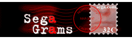
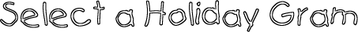
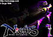
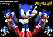
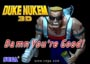
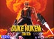

Segagrams - Mande um postal da SEGA!
 :::.Por Gigacom
:::.Por Gigacom
Há muito e muito tempo atrás, pelos idos dias de 1997, havia um serviço bastante interessante no site da SEGA, que era o Segagrams. Através desse serviço, você podia escolher uma fotinha (como um selo) de seu personagem ou jogo da SEGA favorito, e o mesmo seria enviado através de e-mail para qualquer pessoa que você indicasse, junto com uma mensagem sua. Lindo não?
Havia
tambem diversos temas para as mensagens, tinha umas imagens indicadas
para uso no dia dos namorados, aniversários, outras só para cumprimentar e por aí vai.


A
idéia era bastante interessante, além de alegrar quem
curtia a SEGA, servia para fazer propaganda dos principais jogos da
SEGA naquele momento (que invariavelmente eram todos do Saturn )
mas foi pouquissimo aproveitado pelos brasileiros, já que na
época computador por aqui era coisa de rico, e internet
então... nem se fala!
)
mas foi pouquissimo aproveitado pelos brasileiros, já que na
época computador por aqui era coisa de rico, e internet
então... nem se fala!
Hoje
o serviço se encontra em pó (morreu faz tempo), mas
é claro que não poderiamos deixar de comentar sobre ele,
afinal, faz parte da história, e fica aqui o registro desse falecido serviço. Deus o tenha .
.


A verdade é que a Sega havia anunciado que o Saturn seria um 32 bits com capacidade semelhante ao de um 64, conforme a revista Hippon Super havia anunciado, mas não teria nem um único processador sequer de 64 bits, como a EGM afirmou e a Ação Games tambem, já achando que a Nintendo sabia de tudo antes de todo mundo.